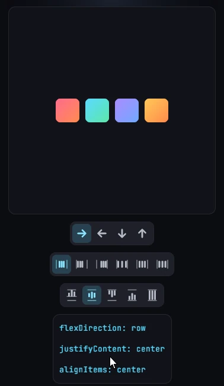

Style transitions
The transition style makes a style change ease instead of snap. You list
the channels that should animate (transform, opacity, size, layout
and so on), each with its own timing curve or spring. Whatever changes the
style, whether a re-render with new values or a hover, press or focus state
taking effect, the node then glides to the new value. The easing runs on the
Bevy side every frame, and React renders only the end state.
Usage
<button
style={{
backgroundColor: "#7aa2f7",
transform: { scale: 1 },
transition: {
transform: { duration: 120, easing: "easeOut" },
backgroundColor: { duration: 200 },
},
}}
hoverStyle={{ backgroundColor: "#89b4fa" }}
pressStyle={{ transform: { scale: 0.92 } }}
>
<text>Press me</text>
</button>A change from React state eases the same way. This knob springs across its track:
<node
style={{
transform: { translateX: on ? 36 : 0 },
transition: { transform: { stiffness: 180, damping: 14 } },
}}
/>Timing
Each channel takes one spec. A spec is a timing curve, or a spring when
stiffness or damping is present:
| Field | Type | Default | Effect |
|---|---|---|---|
duration |
Time |
300 |
Length of the curve. Ignored by springs |
easing |
"linear", "easeIn", "easeOut", "easeInOut" |
"linear" |
Curve shape (cubic in, out and in-out) |
delay |
Time |
0 |
Wait before easing. Timing curves only; springs ignore it |
stiffness |
number |
100 |
Spring stiffness; selects a spring |
damping |
number |
10 |
Spring damping; selects a spring |
mass |
number |
1 |
Spring mass (does not select a spring on its own) |
A Time is a number of milliseconds or a string with a unit ("200ms",
"0.2s"). The default easing is "linear", not CSS's ease. A spring has
no duration: it runs until it comes to rest, and a low damping overshoots
the target before settling.
What triggers a transition
A listed channel eases whenever the value it covers changes in the style in effect:
- A re-render that changes the value.
- A
hoverStyle,pressStyleorfocusStylestarting or ending. Thetransitionvalue is read from the style in effect too, so atransitioninsidehoverStyletimes the ease into the hover state and the base one times the ease back out. - A new target while a transition is running restarts the ease from the current on-screen value, so interrupted transitions never jump.
Rules that are easy to trip over:
- Explicit channels only. There is no
allshorthand and no fallback: a channel without an entry snaps. - No enter animation. A node's first style is adopted as it is, even
with a
transition. To animate a node in, mount it with the start value and switch to the end value once it has been on screen for a frame (for example after a shortsetTimeout). A switch from a bareuseEffectcan reach Bevy in the same frame as the mount and snap. Unmounting is immediate. A shared value is the more robust tool for entrances. - Set the value in every state. A channel eases between two values. If
the base style leaves a property out and a state style sets it, the way
back snaps, and the next change can snap too. Put the resting value
(
transform: { scale: 1 },opacity: 1) in the base style. - Bindings win. A property driven by an
{ animated }binding ignores its transition. For the group channels (transform,transform3d,filter,backdropFilter, the gradients), any binding in the group switches off the whole channel.
Channels
| Channel | Eases | Notes |
|---|---|---|
transform |
translateX, translateY, scale, scaleX, scaleY, rotate |
One spec for all six. See Transforms |
opacity |
opacity |
See Opacity |
backgroundColor |
backgroundColor |
Interpolated in sRGB |
size |
width, height, maxWidth, maxHeight |
Real layout; see Size |
borderRadius |
Each corner | See Borders |
backgroundGradient |
backgroundGradient stops, angles, positions |
Matching structures only. See Gradients |
borderGradient |
borderGradient, the same way |
Independent of backgroundGradient |
filter |
The filter chain's params |
See Filters |
backdropFilter |
The backdropFilter chain's params |
See Backdrop filters |
transform3d |
Every transform3d field |
See 3D transforms |
morphFilter |
The morph's progress | Built-in default; see Morph filters |
scroll |
The scroll offset of a scroll container | See Scroll |
layout |
The laid-out position and size | FLIP; see Layout transitions |
sharedElement |
A shared-element flight | See Shared elements |
How values move:
- Lengths (translations, sizes, corner radii) ease between values of the
same unit: px to px,
%to%,vwtovw. A change of unit, or to or from"auto", snaps. rotateeases numerically, so 350 to 10 degrees turns the long way through 180.- Unsetting
borderRadiuseases to square corners, and a corner that changes unit snaps on its own while the others ease. The radius is part of layout, so every eased frame is a relayout. morphFilteris the one channel that animates without an entry: a key change eases over 300 ms with"easeInOut". An entry only changes that timing.- Unsetting
filter,backdropFilter,transform3dor a gradient snaps. The pages linked above show how to keep an identity value in the base style so removal can ease.
Properties without a channel snap: text color, borderColor,
minWidth/minHeight, positions (left, top, …), padding, margin, gap
and the rest. A layout transition eases the moves and resizes they cause,
and text color, border color and gap can be driven by an
animated value instead. SVG shapes ease their numeric
attributes with a transition prop of their own (see
<svg>).
Size
transition: { size } eases width, height, maxWidth and maxHeight
through real layout. Every frame lays the tree out again at the eased size,
so the content around the node re-flows with it, as in an accordion:
<node
style={{
maxHeight: open ? 240 : 0,
overflowY: "clip",
transition: { size: { duration: 300, easing: "easeInOut" } },
}}
>
{children}
</node>Both ends need a value in the same unit. An "auto" height cannot ease, so
ease maxHeight to a fixed value tall enough for the content instead.
minWidth and minHeight are not part of the channel.
Under Bevy's layout rounding a size eased through real layout grows in whole
pixel steps, and everything it pushes around hops with it. Set
layoutRounding: false on the parent that lays out the animated node and its
neighbours for a smooth glide (see
Layout rounding).
Layout transitions
transition: { layout } eases a node from its previous laid-out rect to the
new one whenever layout moves or resizes it, whatever the cause: a sibling
inserted, removed or reordered, a sibling or the parent resizing, a re-wrap,
a changed flex or grid property, a window resize.
<node style={{ flexDirection: "row", gap: 8 }}>
{order.map((id) => (
<node
key={id}
style={{
width: 40,
height: 40,
transition: { layout: { duration: 400, easing: "easeInOut" } },
}}
/>
))}
</node>- The real layout updates at once. The node is drawn with a translation and a scale from its old rect that decays to nothing (the FLIP technique), so no frame relayouts and the cost is small.
- Children move with the node but are not scaled. A resizing node eases its
own box (background, border, shadow) while its children sit at their final
positions, crisp. A
<text>or<image>node scales its own content. - Only nodes with the channel ease. Siblings and the parent snap to the new
layout unless they have their own
layoutentry, so give it to every item of a list whose order changes. - Pointer events follow the eased position.
- The first layout is adopted silently, and an unmounted node disappears at
once. A node that goes from
display: "none"(or zero size) to visible grows in place from its final position; one that collapses to zero size snaps. - Moves under half a physical pixel do not start an ease.
- Scrolling an ancestor and the node's own
transformare not layout changes. - An
{ animated }binding on one of the node's layout fields (width,left, …) owns its rect, and the layout channel stays out of its way.
Layout and size together
layout fakes the node's own box; it never pushes its neighbours. A
container whose size change must re-flow what is around it uses size (with
explicit sizes), and its children use layout to glide to their new slots.
The two channels also compose on one node: the size eases through real
layout, and a jump the size change does not explain, such as a flipped
flexDirection, still glides by translation.
Scroll
transition: { scroll } on a scroll container (overflowX or overflowY
set to "scroll") eases its scroll offset toward a new target instead of
jumping: a controlled scrollTop or scrollLeft change, or accumulated
mouse wheel input. It covers both axes.
Dragging the scrollbar thumb or clicking its track bypasses the ease. Do not
also feed onScroll back into the same controlled axis, or the round trip
fights the ease: drive the target from your own state and read onScroll
into a separate one. See Overflow.
Limits
- Channels group properties (one
transformspec for every transform field), there is noallshorthand, and there are four easing curves (no cubic Bézier). - No enter or exit transitions: mounting adopts, unmounting is instant.
- A
layouttransition on a node whose rect is moved every frame by something else, such as an ancestor'ssizetransition or a window being resized by dragging, keeps restarting: the node lags behind and catches up when the motion stops. sizeandborderRadiusrelayout on every eased frame. Prefertransformandlayoutfor motion that does not need to push other content.

See transition in the style
reference.